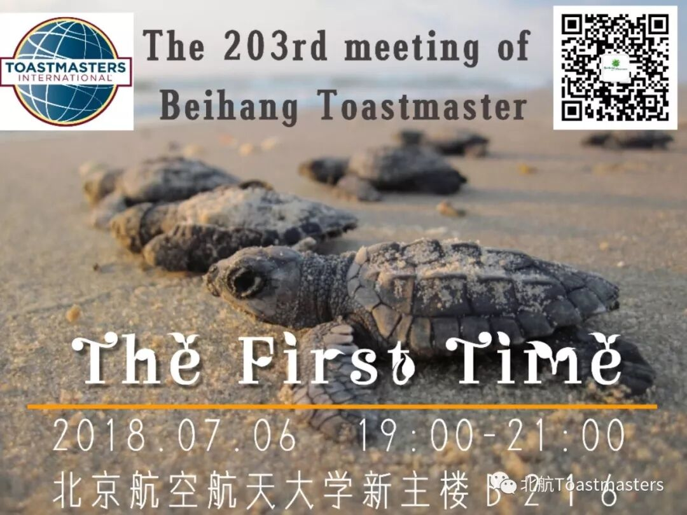
Time: 19:00-21:00, Friday, 6th July
Venue: Room B216, New Main Building, Beihang University
Theme: the First Time
This Friday is a beginning of new-term Beihang Toastmasters and is also the first time of regular meeting. What kind of fantastic things it will bring to us?
The impromptu session will be hosted by our former president Cyril, who designed his first-time poster for this meeting. We all have experienced, are experiencing and will experience different the “First Times”. Though they are full of frustration, they still have endless hopes. Cyril will chat with us those “first times” we faced before.
Welcome to our Beihang Toastmasters and share with us your "first times".
Senior Roles
Toastmaster-Allen
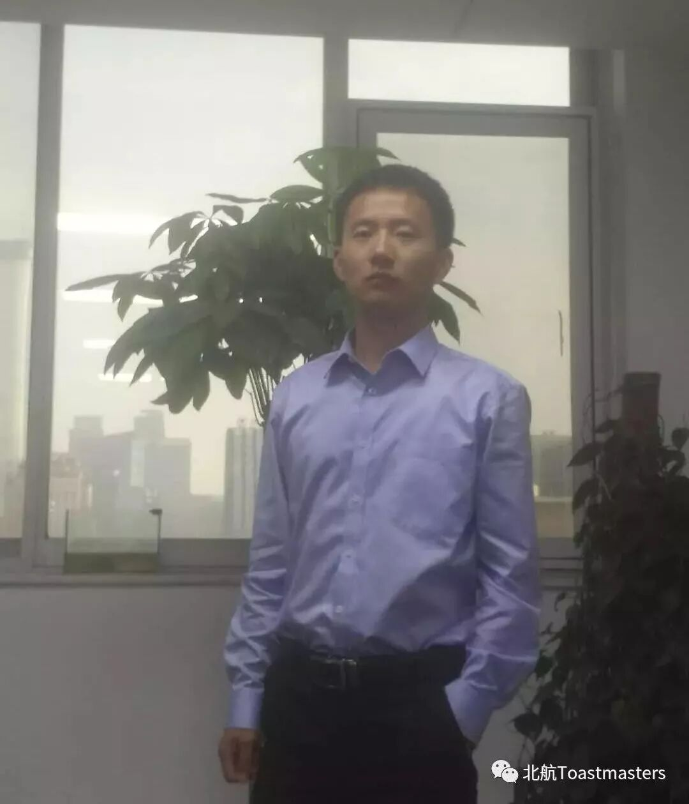
Table Topic Master-Cyril
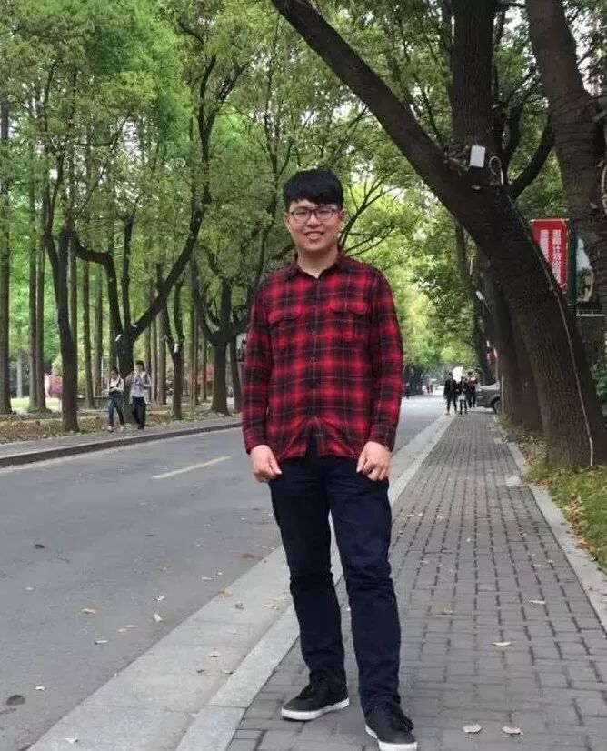
General Evaluator-Bree
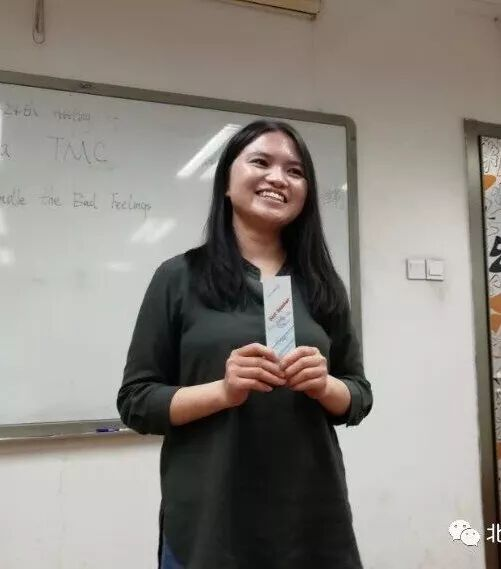
You probably get into new field continuely or face new conditions occasionally, with unforgettable reactions and deep reflections. If so, don't hesitate, and join our meeting.
Prepared Speakers
01. Samuel
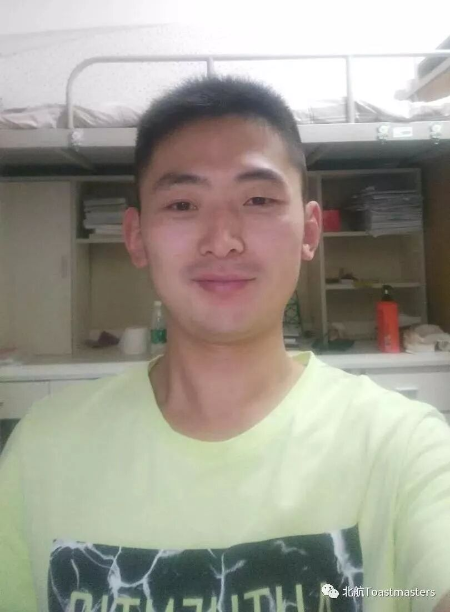
Title: Keep Your Own Routine
Project: Level1-Project2-second speech
Intro:do you often get distracted by trivial affairs? how do you deal with it? Samuel provide us a solution: always keep your routine!
02. Wicher
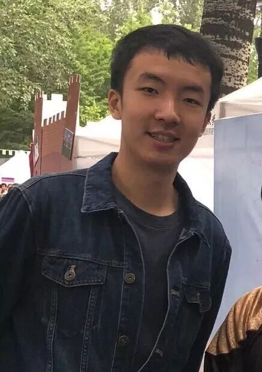
Title: Let's Do Some Reading
Project: Level1-Project2-first speech
Intro: Let's do some reading.
03. Arthur
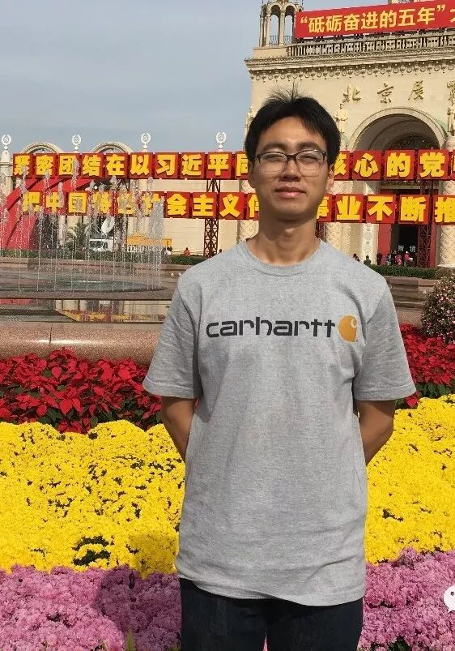
Title: the Reason Why I Come Here
Project: Level1-Project1-first speech
Intro: It’s my first time to deliver a speech, I want to share some stories between I and toastmaster, and the reason why I come to join the beihang toastmaster club. Hope you like it.
04. Justin
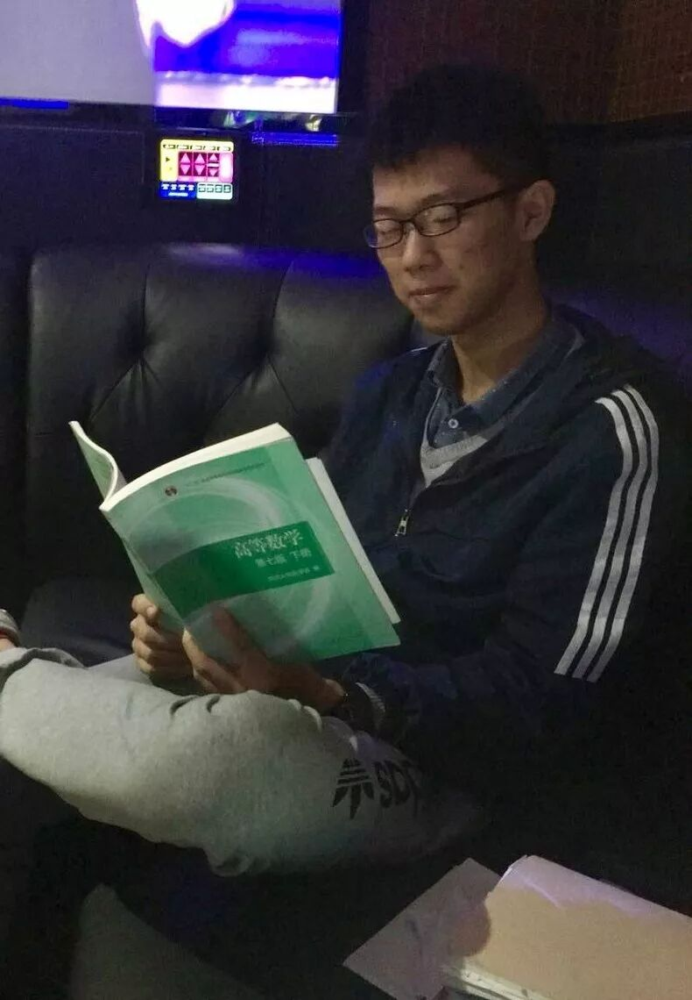
Title: Sometimes You Gotta Run Before You Can Walk
Project:Level1-Project1-first speech
Intro: It’s my first time to deliver a speech, which is about why I joined Beihang TM and I will share my goal of leadership and public speaking.
Evaluators
Table Topic Evaluator & Evaluator for Speaker 1-Kaisense
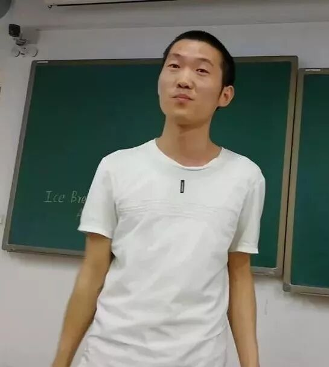
Evaluator for Speaker 2-Samuel
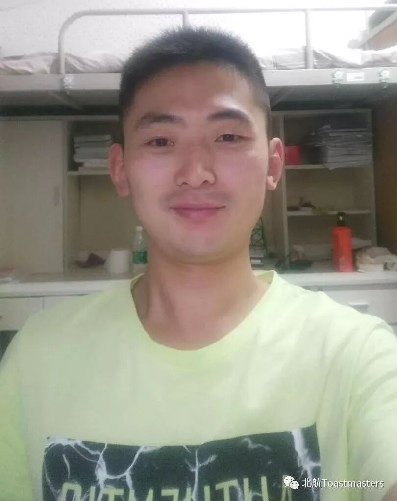
Evaluator for Speaker 3-Joy
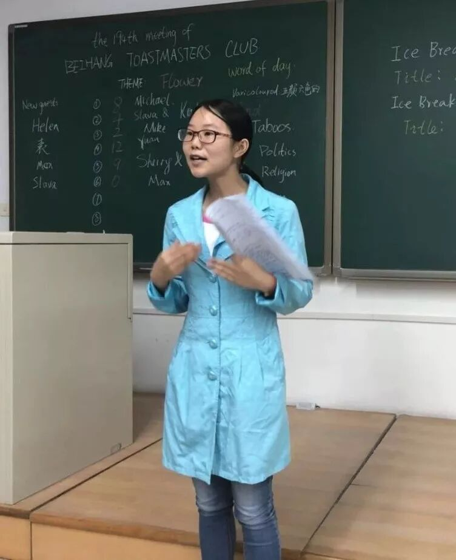
Evaluator for Speaker 4-Claire
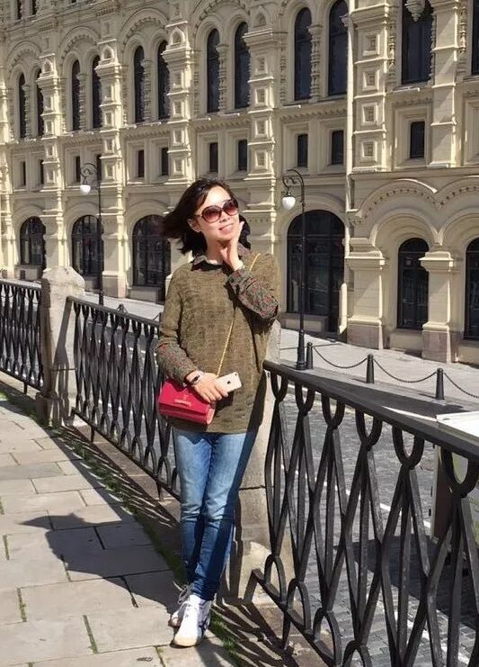
Supporting Roles
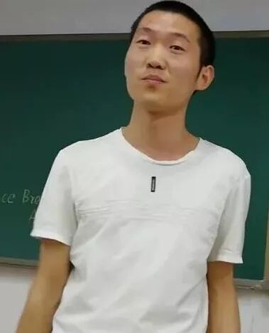
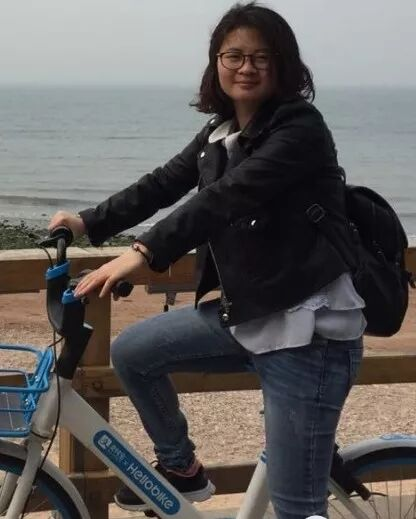
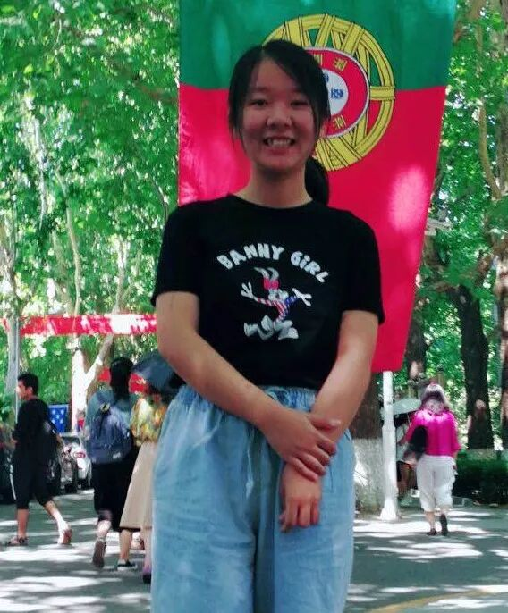
Ah-Counter-Kaisnese
Timer-Annie
Grammarian-Tanner
Quizmaster-Lily
BeihangToastmasters Club is a students' union. At the same time, we belong to a non-profit international organization calledToastmasters International.
Toastmasters International (TI) is a non-profit educational organization that operates clubs worldwide for the purpose of helping members improve their communication, public speaking, and leadership skills.You can find us by the following map of Beihang University.
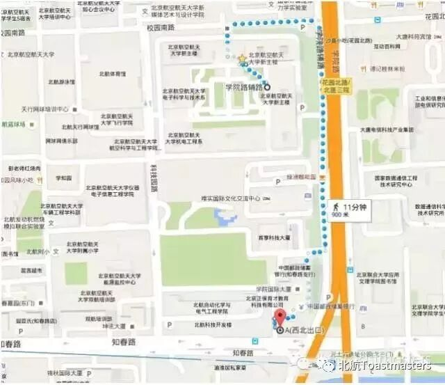